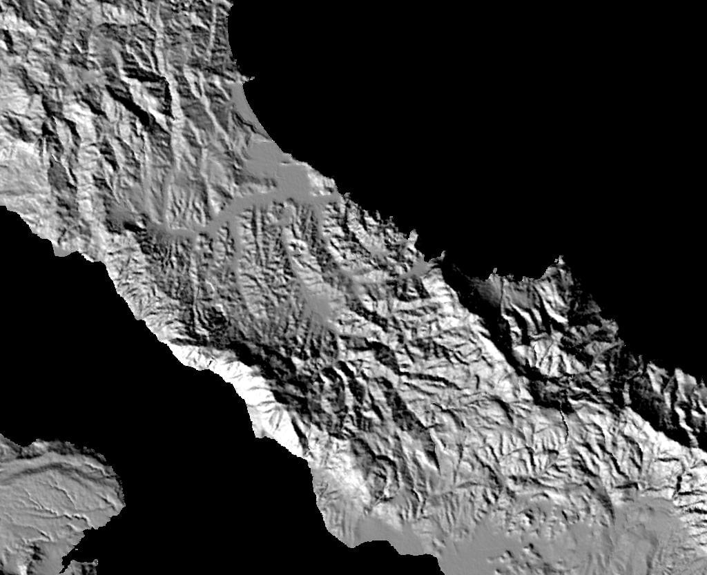
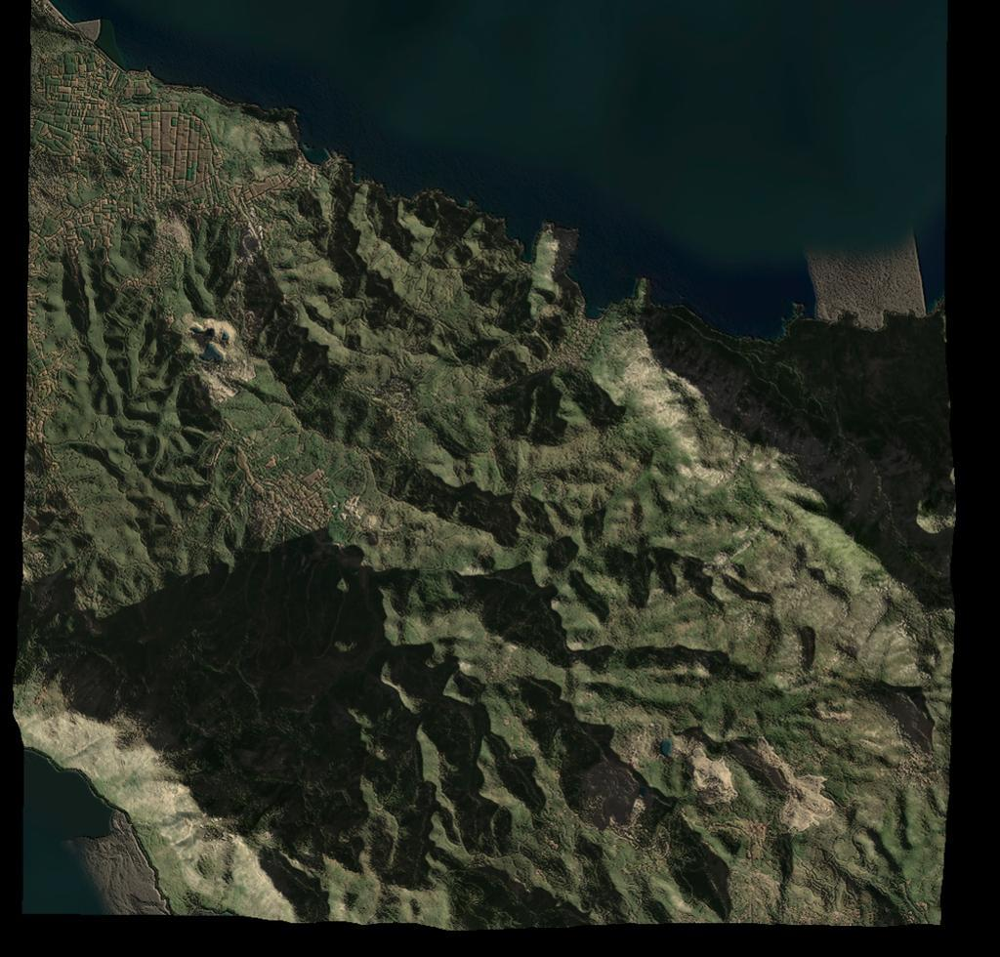

Recreating shadows from surrounding Mountains
Copernicus EEA-10 DEM
EU Copernicus program publishes all kinds of global geographical data, including a EEA-10 dataset that's an EU wide elevation map of 10x10m resolution.
All data is available online but a bit clunky to download, you'll need to register https://browser.dataspace.copernicus.eu/
Data comes in some kind of sentinel2 jp2 format. You can convert this to tiff using gdal
apt-get install gdal-bin
gdal_translate T34SGH_A040516_20230326T091116_B01.jp2 elevation.tif

Merging meshes, final sim
I'm interested in a high resolution image of the land with low
resolution mountains, so I use two overlayed meshes with separate
textures)

I had to write some code to read the tiff coordinates and correctly translate those to opengl transformations so that I can import multiple tiffs and overlay them.
